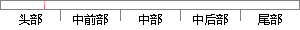

状态寄存器 CPSR
片段位置图

相似结果
相似片段：CPSR:程序状态寄存器(current program status register) cpsr在用户级编程时用于存储条件码；CPSR包含条件码标志，中断禁止位，当前处理器模式以及其他状态和...
| 标题 | 《cpsr_百度百科》 |
| 对比库 | PaperRater云论文库 |
| 网址 | http://baike.baidu.com/link?url=h9SpmNphd7PYyhdSjtcg2Z3KowJr6QrwHzol0JZQBl9nKGyI3f6QSyKgq7It7HlYM6G0Qm_p5FHFaYEGo_p1Dq |
| 相似率 | 100% （严重抄袭） |
※ 片段修改建议 ※
近似词参考：- 状态：状况
系统自动生成语句：状况寄存器 CPSR
注：本片段修改建议为系统自动生成，仅供参考。